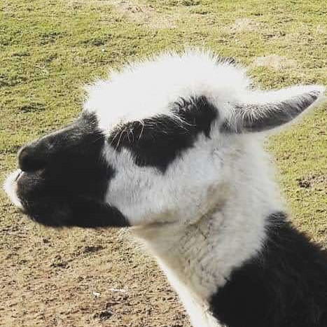
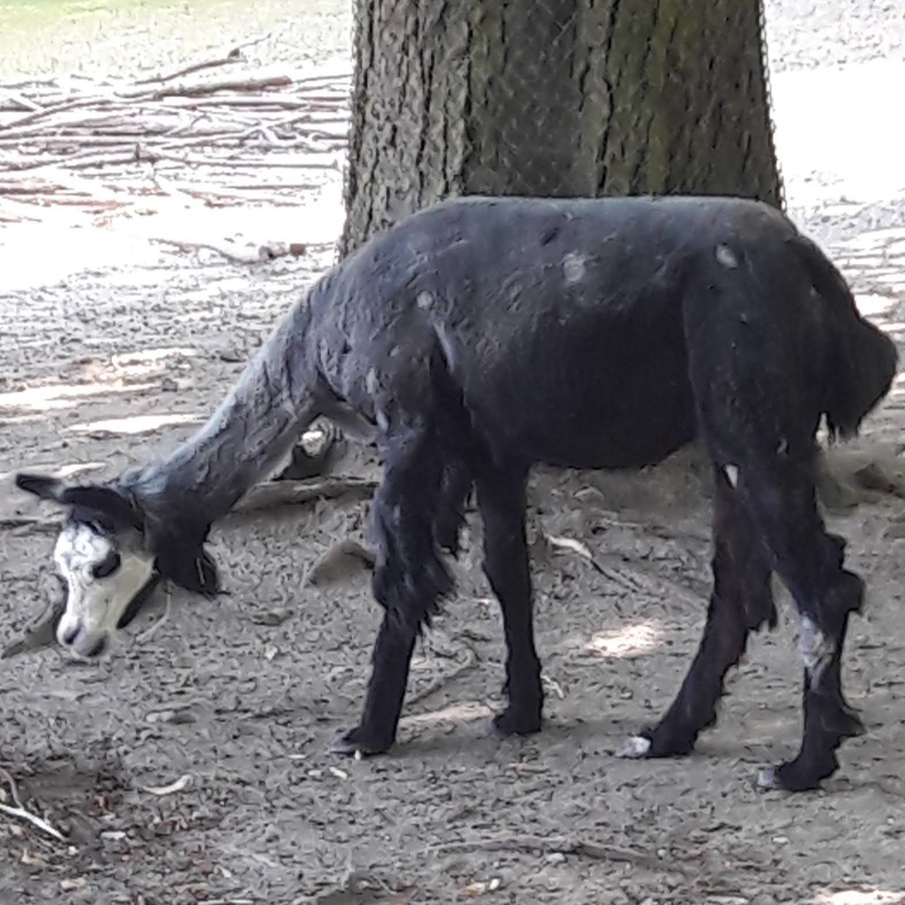
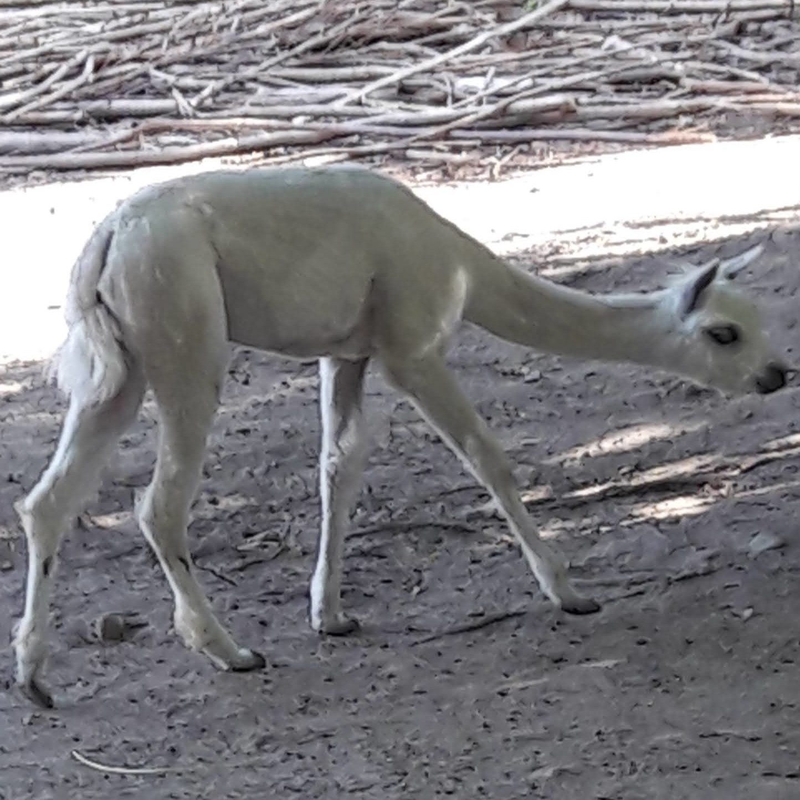
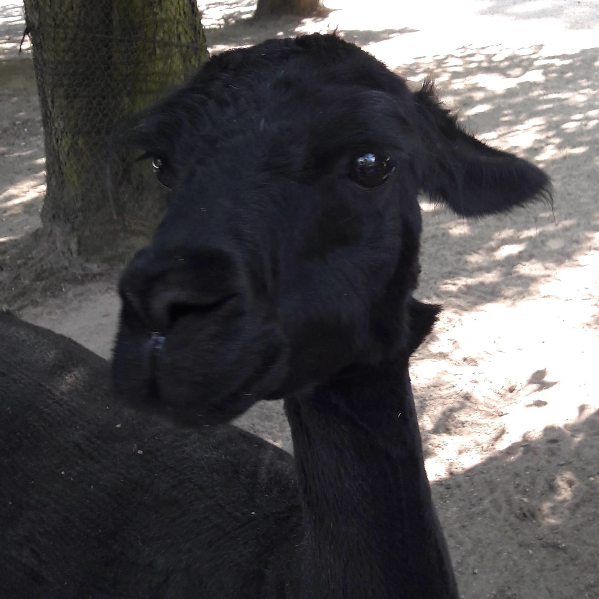

This website is awesome.
This website has some subtext that goes under the main title. It has smaller font and the color is lower contrast.

Some images of alpacas

This is an image of a black and white alpaca at the zoo.

This is an image of a mostly black alpaca with a white face at another zoo.

This is an image of a beige alpaca at the zoo.

This is an image of a black alpaca at the zoo.
If things are truly bleak, try to find an alpaca
or three (they are herd animals, a single alpaca is always sad and lonely) and interact with them. It will cheer you up! Alpacas are even used
as therapy animals because they are so gentle and amazing!
‐ Just Me, an Odin Project Learner
Action